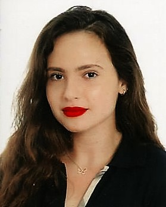

Hello, I'm Sara

Well, to be honest; I never thought that one day I would learn coding... Especially since I just figured out how to use Excel. I'm kidding for Excel but my relationship with computer science is pretty unstable for the moment 😉...But don't worry, i am working on it ! Let's discover together who i am.
MY PASSION N°1 : Singing
I took 5 years of singing classes with the amazing singer Christie Caro and am currently semi-finalist in STUDLIVE – the 1st Moroccan singing contest. I am used to be on stage in front of a hudge audiance and i've already done more than 4 shows.
MY PASSION N°2 : Drawing
Since my youngest age, i pay attention to small details and my sense of analysis is fortunately very developed, which has helped me draw and paint portraits as easily as writing my name. This helps me relax when i feel anxious. Art in general has always attracted me and being able to paint whatever i imagine is a strenght that i had the chance to develop.
MY PASSION N°3 : Acting
I took 7 years of acting classes and the feeling i got while playing a role on stage was just indescribable. This amazing experience is unforgettable.
MY PASSION N°4 : Photography and modelling
YES, photography is an art. Whenever i see something that blows my mind, i never forget to take a picture of it. It's also a question of details, colors, harmony, shadows... and above all: Emotions. A picture speaks for itself. Well, i do love to take pictures but so i am by others... I am not as famous as Gigi Hadid but, who knows, everything is possible 😂!
MY PASSION N°5: Writing
I started writing a few months ago. Maybe it's to early to call that a "passion" but i bet it'll soon become one. One day, i woke up with the determination to start a novel...I hope i'll keep this dynamic spirit until i finish it !